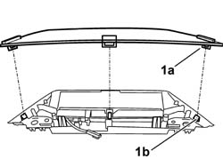
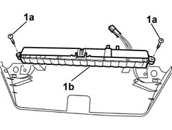

5550D17 THIRD BRAKE LIGHT - R R
- Path
- Procedures > 55 ELECTRICAL EQUIPMENT > 5550 WARNING AND MANOEUVRING INDICATORS > 5550D BRAKE AND REVERSING LIGHTS > 5550D17 THIRD BRAKE LIGHT - R R
- Kind
- repair procedure (removal / refitting; the operation number is the code)
- Applies to
- all engines; all production periods
- Interactive page
- https://sloeber94.github.io/elrnDB-aGt/en/#/125001698
Applies to: all engines; all production periods
 Removing
Removing
 Refitting
RefittingOp. 5550D16 THIRD STOP LIGHT - R+R
1. Release the tabs (1a) for the lens cover from the retainers (1b).

Applies to: all engines; all production periods
1. Undo the bolts (1a) and remove the bulb holder assembly (1b).

Applies to: all engines; all production periods
Refitting
RemovingFit the bulb holder in place and secure it using the bolts.
Fit the lens cover taking care to attach the tabs to the retainers.